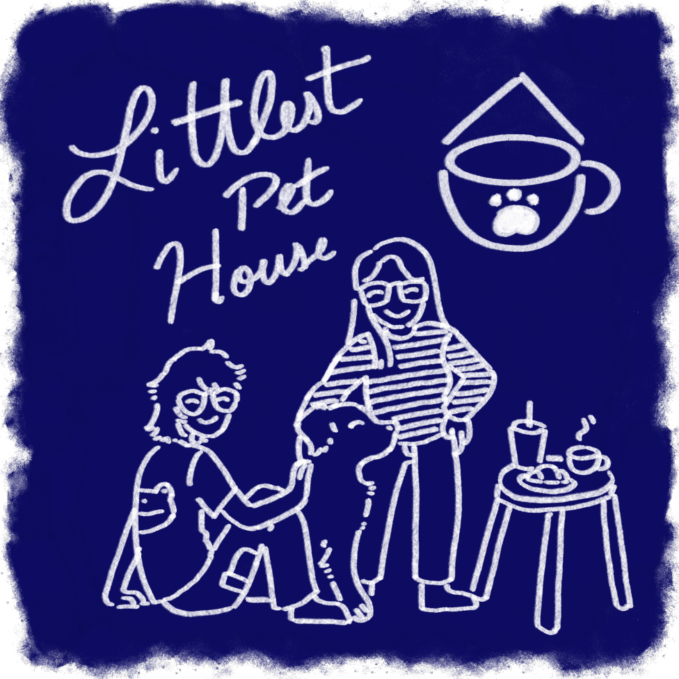

About Us
Hello,
The Littlest Pet House is a pet café based in New York City, founded in 2023 by two college best friends,
Michelle and Nate. It proudly offers a diverse range of pets and specializes in its patisserie. From
frogs to dogs, our café features a large menu that accommodates both our pets and human customers.
It started as a small café, built with blood, sweat, and tears (to pay off college loans). After two
years of running the café, Michelle and Nate decided to introduce their love for critters and furry
friends. This decision combined the duo's separate interests—Michelle, a passionate baker and cook, and
Nate, an avid animal lover.
The Littlest Pet House has received tremendous nationwide support, allowing us to expand our growing
collection of pets. The world has raccoon cafés, cat cafés, and dog cafés—so why not bring all the
animals together? Our café is sustainable, well-researched, and ethically managed to ensure all our
precious pets live long and healthy lives.
We hope you love our friends and food just as much as we do!
Love,
Michelle & Nate